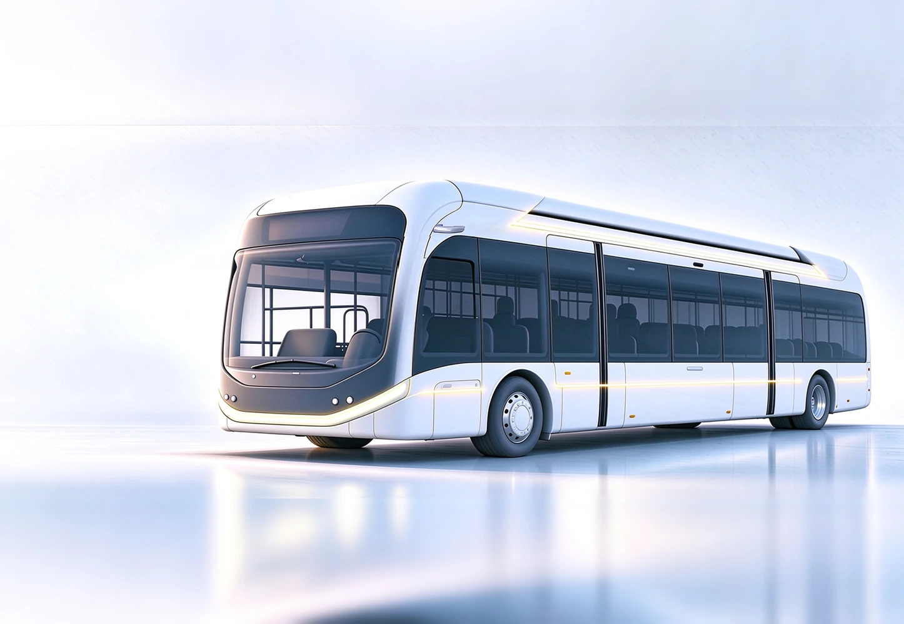

摄像头监控系统
产品概览
摄像头监控系统（CMS）利用外置摄像头及座舱内显示屏替代传统外后视镜。CMS 可根据不同车型及项目要求，提供商用车和乘用车适配方案。

Capabilities
通过外置摄像头采集，并在座舱内显示屏呈现车辆侧后方视野。
可通过图像处理、自动亮度调节和高动态范围等技术改善复杂光照下的观察效果。
可根据商用车或乘用车项目需求开展安装、显示及法规适配。
产品详情
VT-CMS 通过车外摄像头采集车辆侧后方视野，并以低延迟在座舱显示屏上呈现，根据环境光自动调节亮度，结合高动态范围、低照度增强、防眩光与软件去雾等处理改善复杂光照下的图像细节。
系统可根据转向、倒车等驾驶场景切换显示视图，并逐步融合盲区车辆、车门开启与周边障碍物等安全提示。针对商用车与乘用车的造型、安装和座舱布局，可分别开展项目化适配。
将侧后方摄像头画面低延迟呈现于座舱显示屏，并根据环境光线自动调节亮度。
通过 HDR、低照度增强、防眩光、背光补偿及软件去雾保持图像细节。
根据转向、倒车等场景切换显示视图，帮助驾驶者快速关注对应区域。
可结合盲区检测、车门开启警告及障碍物识别，将风险信息呈现在侧后视野中。
Applications
CMS 统一支持商用车与乘用车项目：针对客车、卡车等车型，重点适配安装条件、侧后视野及项目法规要求；针对乘用车，则结合整车造型、后视镜区域与座舱显示布局进行定制。
Regulatory Compliance and Certification
CMS 产品技术解决方案已通过 GB 15084-2022《机动车辆间接视野装置性能和安装要求》测试检验，并取得欧盟 ECE R46 认证。
Related Products
产品功能和配置可根据车型与项目需求定制，具体方案以项目评估为准。